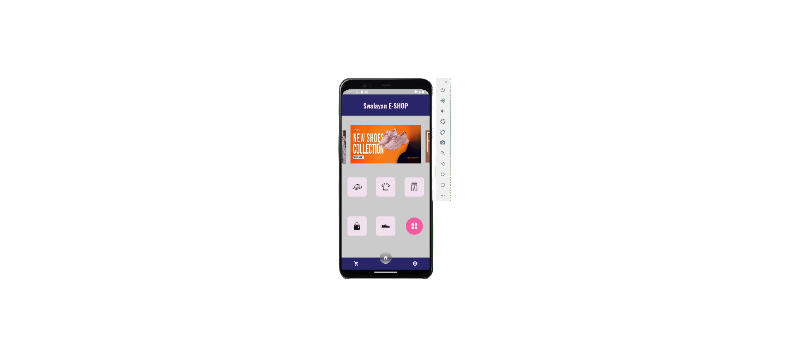

Programming
Era digital kian berkembang pesat dan maju tiap waktunya. Hal ini ditandai dengan kehidupan sekarang yang bergantung pada teknologi informasi dan komunikasi.
Salah satunya ialah programming. Hal ini dikarenakan programming merupakan salah satu komponen yang berperan penting atas kemajuannya teknologi.
Lantas sebenarnya programming itu apa?
Programing disebut sebagai proses pembuatan program komputer yang dapat dijalankan oleh user dan melakukan berbagai fungsi didalamnya. Misalnya saja menghitung di kalkulator, berbelanja di e-commerce, memesan ojek motor/mobil lewat aplikasi pemesanan, dan sebagainya.
Semua aplikasi itu ada karena programming aplikasi yang sesuai fungsi serta menggunakan bahasa pemrograman yang pas. Banyak bahasa pemrograman itu seperti Python, Javascript, HTML, CSS, dan lain sebagainya.
Karena hal itu, programming menjadi salah satu minat baru yang banyak dicari orang sekaligus perusahaan. Ya, perusahaan mencari berbagai talenta-talent yang bisa programming dan mereka disebut sebagai programmer.
Programmer sendiri dituntut harus bisa membuat software sesuai kebutuhan, melakukan debugging, perbaikan, dan segala macam atas suatu software.
Dalam pencarian programmer, ada banyak pertimbangan yang harus dilihat. Mulai dari profilnya, apa saja proyek yang sudah pernah ia kerjakan, hasilnya seperti apa.
Karenanya, saya hadir membuat sebuah website ini sebagai salah satu bentuk portofolio atas hasil kerja keras programming saya. Website ini menggunakan bahasa HTML dan CSS.
Dari website ini, user bisa melihat profil, proyek, hasil proyek, bahkan kontak saya. Tanpa berbasa-basi lagi, mari langsung pindah ke segmen profil.
Profil
Halo semuanya... Nama saya adalah Arya Gading. Saya adalah mahasiswa semester 6 Universitas Esa Unggul cabang Harapan Indah, Bekasi. Saya adalah mahasiswa dari Fakultas Ilmu Komputer, Program Studi Teknik Informatika.
Saya memiliki minat juga keahlian di bidang programming terkhusus dalam bahasa Python, Flutter, MySQL, HTML, CSS, dan lainnya. Saya juga sudah membuat atas beberapa projek programming seperti website lokal, aplikasi mobile, database, dan proyek python.
Saat ini saya juga sedang aktif dalam mengikuti Studi Independen SIB Dicoding 6 (Front-End Web dan Back-End). Di kemudian hari, saya memiliki harapan untuk terus bisa menunjukkan kemampuan saya kepada orang luar, negara, bahkan dunia.
Selain itu, saya juga memiliki harapan untuk bisa menjadi seorang programmer profesional, handal, dan berkontribusi bagi perkembangan teknologi di kemudian hari.
Proyek Github
Seperti yang bisa dilihat di halaman Github saya. Per saya membuat website ini, saya sudah membuat sebanyak 3 proyek yakni aplikasi Swalayan E-Shop, website input database mahasiswa berbasis CRUD, dan berbagai proyek Python.
Semuanya menggunakan 3 bahasa pemrograman yang berbeda. Flutter (Dart), PHP, dan Python. Mari sama-sama melihat secara detail proyek-proyek apa saja yang pernah saya buat.
Aplikasi Swalayan E-Shop

Aplikasi Swalayan E-Shop dibangun menggunakan bahasa pemrograman Dart dengan bantuan Flutter. Aplikasi ini juga sudah dilengkapi enkapsulasi dalam proses buildnya sehingga memiliki keamanan yang baik.
Aplikasi ini memiliki 2 API yakni API Login/Register dan API Transaksi. API Login/Register berfungsi mengirimkan data ke server tentang data akun mereka sehingga jika ingin login lagi bisa dilakukan kapan saja dan tidak hanya dari device lokal saja.
Sedangkan API Transaksi berfungsi mengirimkan ke server untuk berbagai item yang ingin dipesan untuk kemudian diteruskan ke metode pembayaran di Whatsapp.
Seperti yang bisa dilihat, aplikasi ini memiliki 3 menu yakni Home, Account, dan Transaction.
Home adalah UI app biasa dimana bisa mengakses fitur-fitur lain kalau ingin berbelanja.
Disana juga terdapat banner carousel slide, clickable banner yang mengarah ke kategori atau item tertentu, di dalam kategori terdapat fitur search aplikasi, dan sejenisnya. Dan juga terdapat fitur all product di kategori ke-enam.
Account adalah UI yang menampung username, nama, nomor telepon, dan foto profil di bagian paling atasnya. UI fiturnya juga bisa mengubah profil, menampilkan riwayat transaksi, tentang kami, dan bisa sign out dari sana.
Transaction adalah tempat dimana barang belanjaan yang sebelumnya sudah ditekan Masukkan Ke Keranjang. Dari sana, bisa menambah atau mengurangi barang, hingga bisa memproses transaksi lebih lanjut.
Website Input Database CRUD Mahasiswa
Proyek Website ini bersifat lokal, yakni harus diakses dengan XAMPP dalam prosesnya. Proyek ini menggunakan PHP dan MySQL dengan Laravel sebagai frameworknya. Di sini, Admin bisa melakukan penambahan, pengeditan, penghapusan mahasiswa yang ada pada suatu universitas / kelas.
Admin juga langsung disuguhkan dengan tampilan database yang sudah terinput sebelumnya. Prinsip yang ada website lokal ini disebut dengan CRUD (Create, Read, Update, Delete).
Ada beberapa atribut di dalam website Input CRUD yang terintegrasi dengan database lokal MySQL Workbench. Atributnya yang ada yakni NIM sebagai primary key, Nama Mahasiswa, Jenis Kelamin, Foto (Berupa Link), Tempat Lahir, Tanggal Lahir, Alamat, Nama Ibu, Email, HP, Edit, dan Delete.
Penambahan, Penampilan, Pengeditan, dan Penghapusan data di website lokal ini bersifat secara real-time. Yang artinya, jika suatu mahasiswa ditambahkan, maka di database akan ikut juga tertambah dengan sendirinya. Begitu juga dengan fitur lain.
Website lokal ini cocok bagi dosen yang ingin mendata siapa saja mahasiswa di kelasnya, atau mendata mahasiswa yang ingin pergi field trip, atau segala macamnya.
Berbagai Proyek Python
Saya juga membangun 2 proyek Python sebelumnya. Seperti GUI Garden dan Kasir Cafe Simulator ini. Sisanya? Itu adalah perkembangan daripada proyek GUI Garden ataupun berbagai program Python skala kecil.
Saya hanya ingin menunjukkan salah satunya. Kasir Cafe Simulator. Program Python ini memungkinkan admin untuk mendata pesanan apa saja yang dipilih serta memasukkan harga produk berdasarkan kuantitas produk yang dibeli.
Misal pembeli membeli Capucino dengan kuantitas 1 (3000/gelas). Maka Admin cukup memasukkan pilihan 1 dengan harga 3000. Harga 3300 sendiri dengan memperhitungkan pajak PPN 10%. Jika pembeli memutuskan untuk membeli minuman lagi maka bisa tekan y.
Admin bisa langsung menekan n untuk langsung mengeluarkan struk kasir kepada pembeli.